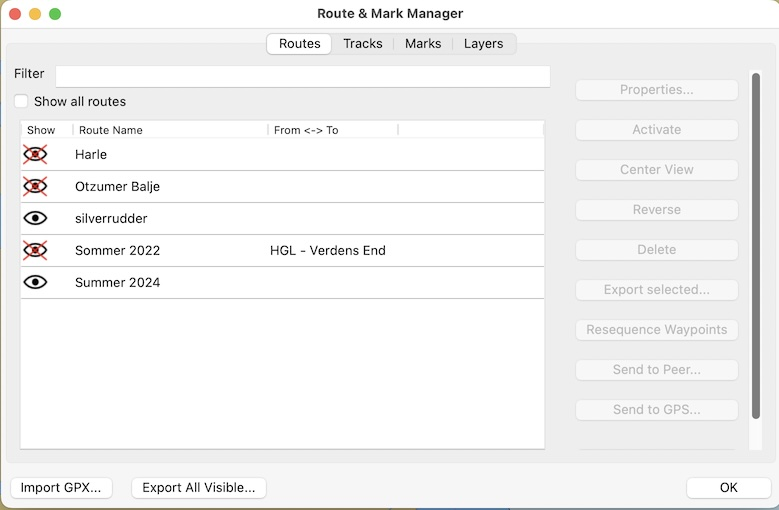

Routes Tab

A route is a set of two or more points you wish to visit in a given sequence. Route points can be defined when the route is created or they can be previously defined Waypoints or Route Points .
Examples]* //
-
Route points have the same properties as isolated waypoints, but do not show in the Waypoint Tab, to avoid clutter.
-
To create a route that uses independent Waypoints rather than route-points, create them first and join them with the create_routes Pencil. If this route is the deleted, these Waypoints will revert back to be independent Waypoints and will not be deleted.
Toggle the
 to
show or hide the route. Dialog confirms if existing independent
Waypoints included in a route should also be made invisible. When a
route is turned visible, all the shared Waypoints are also made
visible. Also use "Filter".
to
show or hide the route. Dialog confirms if existing independent
Waypoints included in a route should also be made invisible. When a
route is turned visible, all the shared Waypoints are also made
visible. Also use "Filter".

Right Menu
Properties
./../route_manager/route_properties.html selection opens a dialog with settings for each route.
Resequence Waypoints
Resequence modifies waypoint names (route points) so that they become increasing numbers (001, 002). Names of manually modified waypoints will remain unchanged. The route is not reversed. Useful when waypoints have been inserted manually or (parts of) other routes have been added to a route.
Send to Peer
Refer to Navigation Sharing
Send to GPS
Refer to Navigation Sharing
Bottom Menu
Import GPX
Import one or more previously saved Routes, or Routes from other gpx compatible applications. It is possible to select and import multiple routes. The default waypoint icon bitmap is a circle. This kicks in if the icon in the imported gpx-file is not recognized.
Export All Visible
Saves all visible routes, waypoints and layers, in one gpx file via a normal file saving dialog. Useful backup technique. Also see Navobj.xml Data Backup
FAQ
Is there a way to change the WP 'Icon' in a route?
To change a single WP icon of a route go to the properties window with a right click on the WP icon. To Globally change a Route’s WP Icons is not possible because the icon Diamond is hard coded in the source. However it is possible to change globally the WP icon for normal WPs, the triangle. To do that search a line with "DefaultWPIcon=…" in opencpn.ini.
Also see Advanced User Manual - Icons Library - Use your own Icons for more information.